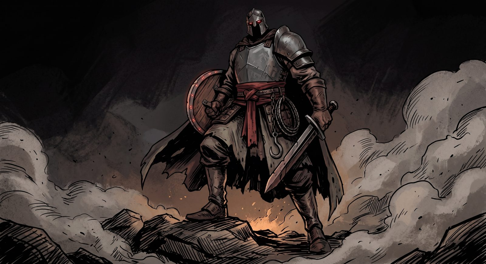
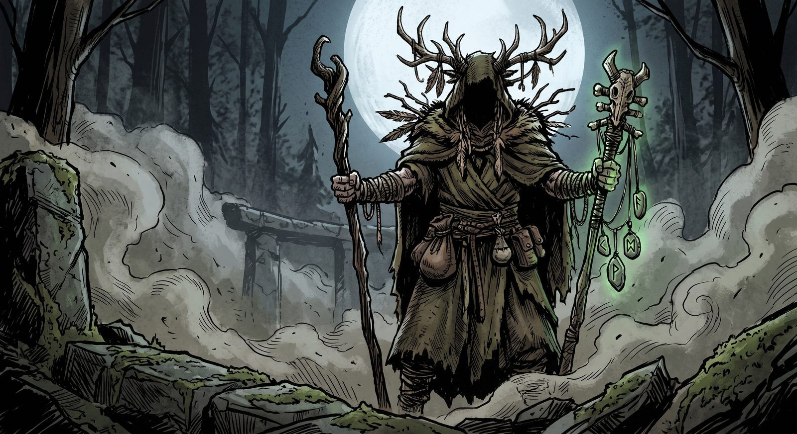
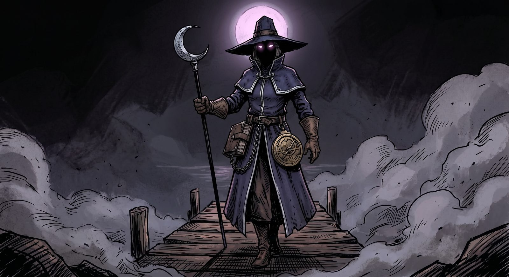
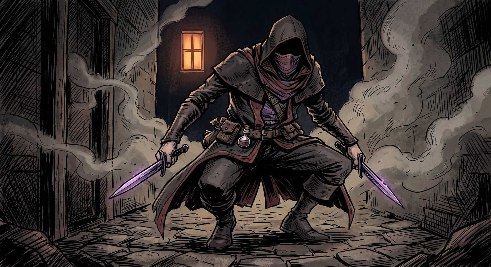
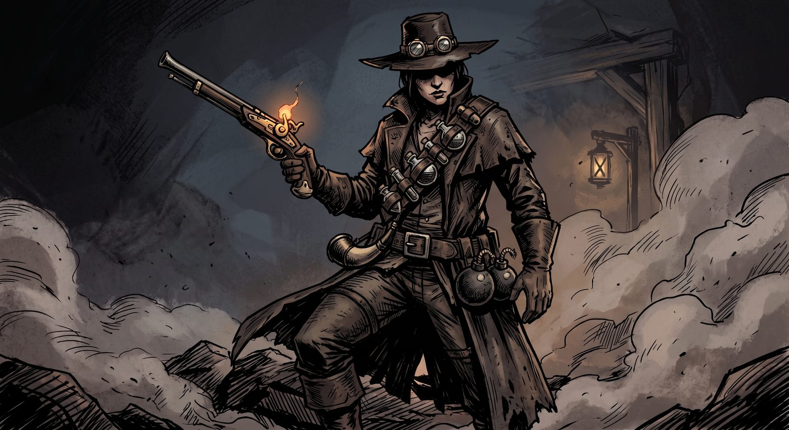

Roguelike-Chaos, gespielt mit Raid-Strategie. Zwei bis drei Spieler, echte Rollen, und ein Auftrag, der mit jedem Erfolg schwerer wird.
Ein Run ist ein Dungeon, und ein Dungeon besteht aus Räumen: Kampf, Elite, Schatz, Lager, Zwischenboss, Endboss. Vor dem Run sieht die Gruppe die Karte – ein verzweigter Graph wie in Slay the Spire – und entscheidet gemeinsam, wie der Weg weitergeht.
Jeder Raum kostet Korruption. Jeder Tod kostet sie, jeder Schatzraum, jede Gier. Es gibt keinen Timer – die Korruption ist die Uhr, und sie läuft nur, wenn man sich entscheidet. Am Ende wartet ein fester Boss mit Mechaniken, die abgefangen, geheilt oder unterbrochen werden müssen: Der Tank pullt, der Heiler liest den Kampf voraus, der DPS wartet auf den Rücken.
Das Ziel ist, im Rang zu steigen. Jeder Run läuft auf einem Key-Level; wer den Endboss mit wenig Korruption legt, steigt bis zu drei Stufen, wer wipet, fällt eine. Mehr Räume heißt mehr Loot und mehr Korruption. Die Frage jedes Runs ist also dieselbe: wie viel Gier verträgt der Fortschritt?
Die Welt liegt irgendwo zwischen Schwarzwald, Karpaten und Masuren, frühe Neuzeit: Radschlossgewehre und Alchemie, Klöster und Zünfte, Schutzrunen über jeder Tür. Die Monster sind die aus den Sagen – Wiedergänger, Strigen, der Leshy im Wald, die Mittagsfrau.
Die Spieler sind Mitglieder einer Zunft von Monsterjägern. Kein Auserwählter, keine Prophezeiung: ein Auftrag, ein Biwak, ein Dorf am Moor, in dem etwas alt geworden ist.
Ton: Witcher, nicht Bloodborne. Melancholisch, dreckig, mit trockenem Humor. Die Spieler sind Handwerker, keine Helden. Sie tun einen Job. Der Job ist gefährlich, und er bezahlt.
Es gibt keine Klassenliste, aus der man eine Klasse wählt. Man wählt zwei Crafts – und die Kombination ist die Klasse.
Ein Skillset: fünf Handwerke der Zunft, jedes mit eigener Ressource, eigenem Werkzeug und einem Arsenal aus zehn Skills. Jedes Craft kann zwei Dinge gut – und hat eine Lücke, die das zweite Craft füllen muss.
Die Klasse: Primär-Craft plus Sekundär-Craft. Der Kern der Skillleiste kommt aus dem ersten, zwei Flex-Skills aus dem zweiten, dazu eine Signatur, die nur diese Kombination hat. Iron mit Shadow ist der Witch Hunter. Shadow mit Iron ist der Executioner – anderer Beruf.
Spielt sich als Nahkämpfer im Zentrum: Jeder Schlag und jeder eingesteckte Treffer baut Grit auf, und Grit bezahlt die großen Momente – Schildwall, Wirbel, gestundeter Schaden. Wer nicht vorne steht, hat nichts zu geben. Gimmick: Iron holt sich den Kampf, statt hinzulaufen – Hook zieht den Zauberer heran, Bellow zwingt die Welle auf sich.

Spielt sich über den Boden: Root hat drei Runensteine, und jeder Runen-Skill setzt einen davon als Fläche in den Raum – Heilung, Rinde, Dornen, Wurzeln. Solange die Rune steht, wird ihr Skill zu Recall: ein Druck holt den Stein aus jeder Entfernung zurück. Sonst läuft sie nach zwölf Sekunden aus. Kein Stein, keine Rune. Gimmick: Root heilt nicht den Spieler, sondern den Ort – die Gruppe muss zu ihren Runen kommen, und Root denkt fünf Sekunden voraus, wo sie stehen wird.

Spielt sich als Fernkampf-Caster mit Rhythmus: Kleine Zauber füllen Silver, die großen geben es aus. Silver Bolt und Moonfire bauen auf, Silver Lance und Rewind leeren. Gimmick: Tide heilt und schadet mit denselben Mitteln – Moonbeam trifft Gegner und Verbündete in einer Linie, Rewind dreht die letzten vier Sekunden Schaden zurück, Lunacy lässt Gegner aufeinander losgehen. Zerbrechlich, aber die längste Reichweite im Spiel.

Spielt sich als Nahkampf-DPS, der vom Fehler des Gegners lebt: Guile entsteht, wenn der Gegner falsch steht (Treffer von hinten), falsch schlägt (Parade, Ausweichrolle durch den Angriff) oder falsch handelt (Treffer auf kontrollierte Ziele). Die leichten Skills sind frei, die Schattenkünste – Teleport in den Rücken, Rauch, Elusive – kosten Guile. Gimmick: Riposte, eine echte Parade-Haltung mit garantiertem Konter-Crit. Shadow hat zwei Farben: Klinge (Rot) oder Gift (Lila).

Spielt sich als Fernkämpfer mit Magazin: sechs Kugeln, jeder Schuss kostet, dann zwei Sekunden nachladen – die einzige Ressource, die von voll nach leer läuft. Öle und Tinkturen kosten nichts, Bomben zwei Kugeln und haben einen Zünder mit Telegraph. Gimmick: Nachladen ist die Entscheidung. Wer im Feuer nachlädt, ist verwundbar; wer in der Pause nachlädt, hat die Kugel, wenn der Zauberer castet. Der Backstep lädt eine Kugel nach.

Konzeptbilder: KI-generierte Stimmungsbilder (Stilrichtung, nicht final). Der Spiel-Look ist reduziertes Cel-Shading in 3D.
Zeile ist das Primär-Craft, Spalte das Sekundär-Craft. Die Diagonale sind die reinen Formen. Drei Beispiele sind darunter aufgeschlüsselt.
| Primär ↓ / Sekundär → | Iron | Root | Tide | Shadow | Flint |
|---|---|---|---|---|---|
| Iron | Slayer | Ironbark | Argent | Witch Hunter | Outrider |
| Root | Thornwarden | Druid | Augur | Nightwitch | Naturalist |
| Tide | Tidebreaker | Nightbloom | Astrologer | Nightcloak | Silvershot |
| Shadow | Executioner | Hexblade | Revenant | Cutthroat | Shadestriker |
| Flint | Grenadier | Plague Doctor | Quicksilver | Dreadhunter | Marksman |
Jedes Calling hat dieselbe Leiste. Drei Grund-Skills kommen mit dem Primär-Craft (Angriff, Bewegung, Unterbrechen). Drei Kern-Skills wählt man aus dessen Arsenal, zwei Flex-Skills aus dem Arsenal des Sekundär-Crafts. Die Signatur ist fest – sie gehört dem Calling, nicht dem Spieler.
Der Kopfgeldjäger der Zunft. Iron-Arsenal für die Schläge, aus Shadow das Gift und der Sprung in den Rücken. Seine Signatur macht ihn zum besten Anti-Zauberer im Spiel: Er hat immer eine Beute.
Der Runenheiler, der nie nutzlos herumsteht. Kern sind die Runen von Root, aus Tide kommt die einzige Sofortheilung und ein Schild. Die Signatur gibt jeder Rune eine Kehrseite.
Der Heiler mit der Maske – ein Flint, der nie zaubert. Kern sind die Tinkturen aus dem Flint-Arsenal, aus Root kommen zwei Heilungen dazu. Die Signatur macht aus jeder Tinktur eine Heilung.
Warum die Signatur keine Ultimate ist: Ein Calling soll sich in jeder Sekunde anders spielen als das Nachbar-Calling, nicht nur alle zwei Minuten. Darum ist die Signatur immer ein Paar aus passivem Kreislauf und einer Taste mit kurzem oder gar keinem Cooldown.
Vier Item-Slots: Main Hand, Off Hand, Armor, Ring. Items haben keine Stats, sondern Sockel – Common bis Legendary heißt ein bis vier davon. Alle Stats kommen aus Perks, den Edelsteinen, die man im Dungeon findet und selbst einsetzt. Um zu verstehen, was man da einsetzt, muss man erst die drei Farben kennen.
Alle Stats gehören zu einer von drei Gruppen, und jeder Skill trägt die Farbe der Gruppe, mit der er skaliert – das sind die farbigen Attribute oben bei den Crafts. Ein roter Melee-Skill wächst mit Attack Power, ein lila Ranged-Skill mit Spell Power, und alles Grüne – Heilung, Schilde, Taunts – wächst mit Health. Wer Rot sammelt, macht also seine roten Skills stärker und seine grünen nicht. Damit ist die Build-Entscheidung immer eine über das eigene Loadout: In welche Farbe gehe ich, und welche Skills nehme ich deshalb mit?
Stahl, Pulver, Muskel. Attack Power, Crit, Tempo, Parry.
Erde, Wurzeln, Salz. Health, Armor, Block. Heilung und Schilde skalieren hier.
Mond, Schatten, alte Worte. Spell Power, Cooldowns, Cast Speed.
Wer Deadlock kennt, kennt das Prinzip: Items gehören zu Weapon, Vitality oder Spirit, und je mehr man in einer Kategorie besitzt, desto mehr Bonus gibt die Kategorie selbst obendrauf. Bei uns macht das der Perk. Jeder gesockelte Perk bringt seine Wertigkeit als Punkte in seine Farbe ein – ein Common auf Level 1 einen Punkt, ein Epic auf Level 4 zehn. Die Punktsumme einer Farbe schaltet die Leiter in den Kacheln oben frei: ab 2 Punkten wächst der Hauptstat, ab 6 kommt der zweite dazu, ab 12 der dritte, und bei 32 der Capstone. Jeder Punkt zählt in alle freigeschalteten Stufen hinein.
Der Perk gibt also zweimal: seine eigene Stat-Zeile, und seinen Beitrag zur Leiter. Bei 32 Punkten liegt ein Softcap, darüber zählt nur noch ein Viertel – außer man trägt ein Legendary, dessen Effekt genau mit den Punkten über dem Cap skaliert. Dann kippt der Run ins Absurde, und das ist erlaubt.
Ein Witch Hunter mit dieser Verteilung: Attack Power, Crit und Tempo aus der Might-Leiter, etwas Health und Armor aus Vitality. Skull Splitter und Ambush (Rot) profitieren voll, Shield Slam (Grün) kaum – also gehört er nicht ins Loadout.
Jeder Perk hat drei Merkmale, die man am Stein sieht: die Farbe (seine Gruppe), den Rahmen (Seltenheit: weiß Common, blau Rare, lila Epic, orange Unique) und Level 1 bis 4. Seltenheit entscheidet, wie viele Stats eine Zeile trägt; Uniques bringen statt Stats einen Effekt. Wertigkeit ist Level plus Seltenheitsbonus – ein Rare auf Level 4 zählt so viel wie ein Epic auf Level 1.
Perks kommen nach jedem Kampf zur Wahl, aus Schatzräumen und von Gegnern. Im Lager werden zwei gleiche Perks zu einem höheren Level verschmolzen, ein Level-4-Perk zur nächsten Seltenheit veredelt. Das ist der Punkt: Man baut sich sein Gear jeden Run passend zu seinem Gameplay – und am Ende ist alles weg, bis auf die Erinnerung an die Kombination, die den Run gedreht hat.
Neben dem Gear gibt es Talente. Sie kommen über Level-Ups im Run: Jeder Aufstieg bietet drei zufällige Talente aus dem eigenen Kit, eines wird auf der Karte zwischen den Räumen gewählt. Talente verändern Skills statt Zahlen – Lacerate springt auf ein zweites Ziel, Rune of Mending zieht Verbündete langsam zur Mitte, Powder Bomb hinterlässt Feuer.
Gear ist Zufall mit Auswahl, Talente sind Auswahl mit Zufall. Zusammen ergeben sie jeden Run einen Build, den man so nicht geplant hat – und der beim nächsten Mal nicht wiederkommt. Ein Lehrmeister im Lager verkauft gezielt Talente, für Spieler, die ihren Plan nicht dem Würfel überlassen wollen.
Das Konzept steht so weit, dass man es angreifen kann – 18 Design-Dokumente, jedes System einzeln beschrieben, jede Zahl ein benannter Startwert. Was fehlt, ist der zweite Kopf: jemand, der das Ding mit mir zu Ende denkt und baut.
Der Vorschlag: Wir arbeiten das Konzept gemeinsam aus und bauen einen ersten Prototypen – ein Raum, ein Gegnertyp, das Bedrohungssystem, die Crafts in reiner Form. Ich bringe Design und UI mit, die Systeme, die Welt, die Oberfläche. Du bringst die Entwicklung mit. Godot 4 und GDScript sind gesetzt, die Umsetzung soll mit KI-Agents laufen, die aus den Dokumenten bauen – aber jemand muss die Systeme hinterfragen, die Architektur halten und am Ende den ersten Key mit mir spielen.
Kein Vertrag, kein Geld auf dem Tisch. Ein Projekt von zwei Leuten, die zu viele Dungeon-Abende in MMOs und zu viele Runs in Roguelikes hinter sich haben und wissen, wie es sich anfühlen soll, wenn beides zusammenkommt. Die komplette Dokumentation liegt offen. Lies sie, stell Fragen, sag, wo du es anders bauen würdest – und dann sag, ob du dabei bist.